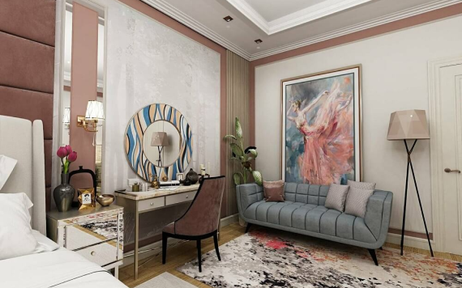

<!--#set var="title" value="Главная" -->

<!--#include virtual="/parts/header.html" -->

<div class="wrapper">
	<div class="page">
      <div class="home-aus">
         <div class="home-aus__container _container">
            <div class="home-aus__title">Мы не просто дизайн-студия, мы - команда талантливых людей, обладающих тонким чутьем, вкусом и большим опытом во главе с опытным и творческим руководителем. </div>
            <div class="home-r__crumbs">
               <a href="index.html">Главная</a><span>/</span><a href="about-us.html">О нас</a>
            </div>
         </div>
      </div>
      <div class="video">
         <div class="video__container _container">
            <div class="video__item">
               <a href="#video" data-video="SonADs_4Two" class="_popup-link video__btn"></a>
            </div>
         </div>
      </div>
      <div class="deluxeh">
         <div class="deluxeh__container _container">
            <div class="deluxeh__text">
               <p>DELUXE HOUSE — это одна из самых успешных студий дизайна интерьера в Астане с командой профессионалов, объединенная желанием создавать неповторимые роскошные интерьеры в Астане и за ее пределами.</p>
               <p>Мы работаем с интерьерами по всему Казахстану!<br>Главная специализация студии — это дизайн квартир, домов и коммерческих помещений любого назначения. Задача компании — создание и реализация интерьеров, выделяющихся своим стилем и безупречным вкусом.</p>
               <p>Одним из самых немаловажных аспектов специфики нашей работы - отличное знание рынка, а значит, мы точно поможем сэкономить большой объем времени и средств!</p>
            </div>
         </div>
      </div>
      <div class="ten">
         <div class="ten__container _container">
            <div class="ten__row">
               <div class="ten__img">
                  
               </div>
               <div class="ten__10"><span>10</span><span>лет</span> 
                  успешной работы!</div>
            </div>
            <div class="ten__txt">
               <p>Наша студия предлагает свои услуги на рынке дизайна интерьеров Астаны с 2011 года. За этот период нами было создано и реализовано уже более 200 проектов.</p>
               <p>У нас широкий ассортимент дизайн-услуг, и мы работаем с любыми помещениями, будь это квартира, коттедж, Торговый Центр, бутик, SPA, сауны, магазины, рестораны, кафе, бизнес-центры или офисы.</p>
               <p>Мы всегда точно знаем, что нужно нашим клиентам и можем предложить ему лучше, чем то, что он от нас ждет.</p>
            </div>
         </div>
      </div>
      <div class="deluxeh">
         <div class="deluxeh__container _container">
            <div class="deluxeh__text deluxehh__text">
               <p>В нашей студии работают настоящие профессионалы, которые искренне любят своё дело и увлеченно работают над каждым проектом. Все наши специалисы специалисты дипломированы и имеют немалый опыт в проектировании, визуализации, подбору материалов и ведению авторского надзора. Вы можете быть уверены за свой проект, с нами он будет в надежных руках!</p>
               <p>Для курирования и проразрачности работ, мы предоставляем круглосуточный онлайн-доступ к чатам, который создается отдельно на каждый проект.</p>
               <p>Мы учтем все стандарты и нормы, предусмотренные законодательством Республики Казахстан при проектировании помещений общественного назначения.</p>
               <p>Основное наше направление - это разработка проектов дизайна интерьера жилых и общественных помещений. С нашими работами Вы можете ознакомиться здесь.</p>
            </div>
         </div>
      </div>
      <div class="tips">
         <div class="tips__container _container">
            <div class="tips__title order__title">Полезные советы  от нас</div>
            <div class="spollers-block _scr-item _spollers _one ">
               <div class="spollers-block__item ">
                  <div class="spollers-block__title _spoller">На что стоит обратить внимание при выборе дизайнеров?</div>
                  <div class="spollers-block__body">
                     <p>Выбор стиля дизайна интерьера не должен зависеть от тренда или мнения окружающих. Если раньше, каких-то 5-10 лет назад все в основном применяли классику, то сегодня, зайдя в помещение, сделанное в этом стиле, может показаться, что ремонт в нем не производился уже давно, или у владельца нет вкуса. Однако, это может быть  не так. И в настоящее время классический интерьер вполне применим, если его "разбавить" современными акцентами, применить новые технологии.</p>
                     <p>Мы работаем со всеми стилями: неоклассика, ар-деко, современный стиль дизайна, минимализм, лофт, модерн, классика, хай-тек, скандинавский стиль, этнический стиль и многое другое. Мы можем создать гармоничное пространство, применяя эклектику (смешение стилей), при этом результат никогда не будет вычурным или вульгарным. Все наши работы создаются по подробно составленному Техниескому Заданию, в котором оговорены все требуемые нашими клиентами условиями.</p>
                  </div>
               </div>
               <div class="spollers-block__item">
                  <div class="spollers-block__title _spoller">Как долго разрабатывается авторский дизайн интерьера?</div>
                  <div class="spollers-block__body">
                     <p>Выбор стиля дизайна интерьера не должен зависеть от тренда или мнения окружающих. Если раньше, каких-то 5-10 лет назад все в основном применяли классику, то сегодня, зайдя в помещение, сделанное в этом стиле, может показаться, что ремонт в нем не производился уже давно, или у владельца нет вкуса. Однако, это может быть  не так. И в настоящее время классический интерьер вполне применим, если его "разбавить" современными акцентами, применить новые технологии.</p>
                     <p>Мы работаем со всеми стилями: неоклассика, ар-деко, современный стиль дизайна, минимализм, лофт, модерн, классика, хай-тек, скандинавский стиль, этнический стиль и многое другое. Мы можем создать гармоничное пространство, применяя эклектику (смешение стилей), при этом результат никогда не будет вычурным или вульгарным. Все наши работы создаются по подробно составленному Техниескому Заданию, в котором оговорены все требуемые нашими клиентами условиями.</p>
                  </div>
               </div>
               <div class="spollers-block__item">
                  <div class="spollers-block__title _spoller">Какой выбрать стиль интерьера?</div>
                  <div class="spollers-block__body">
                     <p>Выбор стиля дизайна интерьера не должен зависеть от тренда или мнения окружающих. Если раньше, каких-то 5-10 лет назад все в основном применяли классику, то сегодня, зайдя в помещение, сделанное в этом стиле, может показаться, что ремонт в нем не производился уже давно, или у владельца нет вкуса. Однако, это может быть  не так. И в настоящее время классический интерьер вполне применим, если его "разбавить" современными акцентами, применить новые технологии.</p>
                     <p>Мы работаем со всеми стилями: неоклассика, ар-деко, современный стиль дизайна, минимализм, лофт, модерн, классика, хай-тек, скандинавский стиль, этнический стиль и многое другое. Мы можем создать гармоничное пространство, применяя эклектику (смешение стилей), при этом результат никогда не будет вычурным или вульгарным. Все наши работы создаются по подробно составленному Техниескому Заданию, в котором оговорены все требуемые нашими клиентами условиями.</p>
                  </div>
               </div>
               <div class="spollers-block__item">
                  <div class="spollers-block__title _spoller">Что отличает наши интерьеры?</div>
                  <div class="spollers-block__body">
                     <p>Выбор стиля дизайна интерьера не должен зависеть от тренда или мнения окружающих. Если раньше, каких-то 5-10 лет назад все в основном применяли классику, то сегодня, зайдя в помещение, сделанное в этом стиле, может показаться, что ремонт в нем не производился уже давно, или у владельца нет вкуса. Однако, это может быть  не так. И в настоящее время классический интерьер вполне применим, если его "разбавить" современными акцентами, применить новые технологии.</p>
                     <p>Мы работаем со всеми стилями: неоклассика, ар-деко, современный стиль дизайна, минимализм, лофт, модерн, классика, хай-тек, скандинавский стиль, этнический стиль и многое другое. Мы можем создать гармоничное пространство, применяя эклектику (смешение стилей), при этом результат никогда не будет вычурным или вульгарным. Все наши работы создаются по подробно составленному Техниескому Заданию, в котором оговорены все требуемые нашими клиентами условиями.</p>
                  </div>
               </div>
            </div>
         </div>
      </div>
      <div class="wawd">
         <div class="wawd__container _container">
            <div class="wawd__title order__title">Что мы делаем?</div>
            <div class="wawd__row">
               <div class="wawd__image">
                  
               </div>
               <div class="wawd__txt">
                  <div class="txt__row">
                     <div class="txt__item">
                        <p>Квартиры, коттеджи и дома</p>
                        <p>Кафе и бары</p>
                        <p>Спортивные помещения</p>
                        <p>Сауны, SPA и гостевые дома</p>
                     </div>
                     <div class="txt__item">
                        <p>Рестораны и лаунж-бары</p>
                        <p>Магазины и бутики</p>
                        <p>Офисы и кабинеты</p>
                        <p>Салоны красоты и центры</p>
                     </div>
                  </div>
               </div>
            </div>
         </div>
      </div>
   </div>
</div>

<!--#include virtual="/parts/popup.html" -->

<!--#include virtual="/parts/footer.html" -->